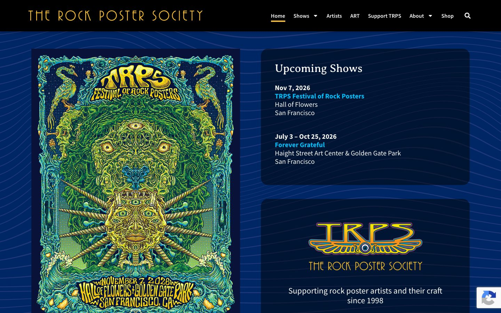

References / Website / 356
The Rock Poster Society website
The San Francisco rock poster society’s site: a dense contemporary psychedelic festival poster on a deep blue ground of wavy lines.
- Source
- trps.org
- Creator
- The Rock Poster Society
- Style
- Psychedelic art (agent-proposed, not yet reviewed by a person)
- Moods
- Dense, nocturnal, ornate
- Evidence
- Captured with
tools/capture.mjs(headless Chrome, 1440 × 900) on 28 September 2026 and inspected. The screenshot shows the first viewport; the measurement covers up to four screens. A small reCAPTCHA badge sits at lower right. - Reviewed
- Rights
- Third-party work, stored with credit for commentary. License: unverified. Rights policy
Observed
- The ground is a deep navy blue covered with fine, wavy horizontal lines like ripples.
- A tall poster at left is filled edge to edge with green and gold faces, eyes, birds, and radiating spikes, symmetrical about a vertical axis. Its lettering, TRPS FESTIVAL OF ROCK POSTERS and the date and venue, is swollen and bent to fit arches and banners.
- At right, two dark rounded panels hold Upcoming Shows in a serif heading with sans-serif details, and the TRPS logo in gold, orange, and purple lettering with a winged eye.
- The header is black with THE ROCK POSTER SOCIETY in widely spaced, thin gold capitals with Art Nouveau shapes.
Why it belongs
The page is a frame for poster art rather than a design in the style throughout. The rippling line ground is the part of the page chrome that carries the style.
Measured values: every metric that depends on computed color fails, because the poster is an image and the ground is dark; the screenshot has 5 hues.
Borrow
Fill a dark ground with fine wavy lines to suggest liquid movement without adding color.
Set a thin, spaced Art Nouveau capital face in gold for a header wordmark.
Measured
Machine-extracted by tools/extract-traits.js on . Full measurement.
- Type families
- Source Sans Pro (97%), Averia Serif Libre (3%)
- Type scale ratio
- 1.23
- Median radius
- 4 px
- Mean chroma
- 0
- Palette
- #000000 83%
- #ffffff 16%
- #dadada 1%
- #00bffb 0%
- #2c324c 0%

